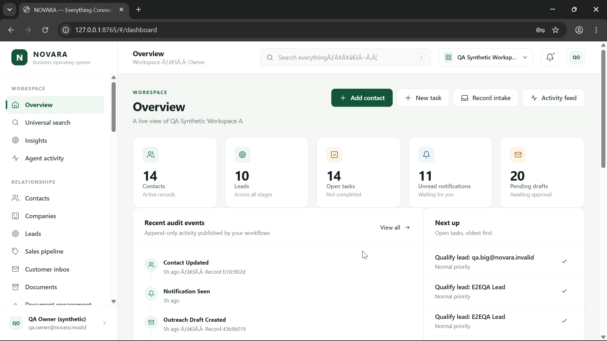
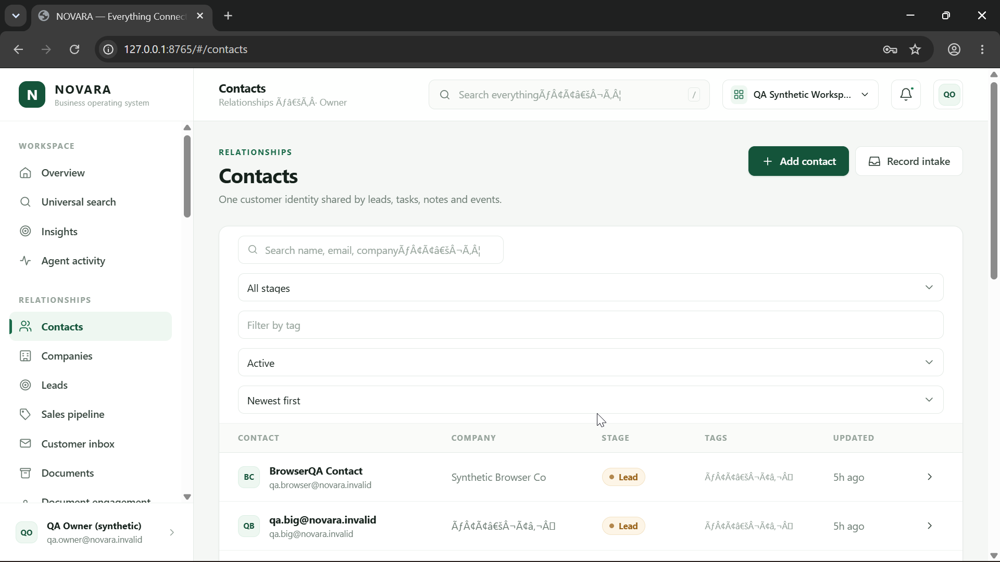
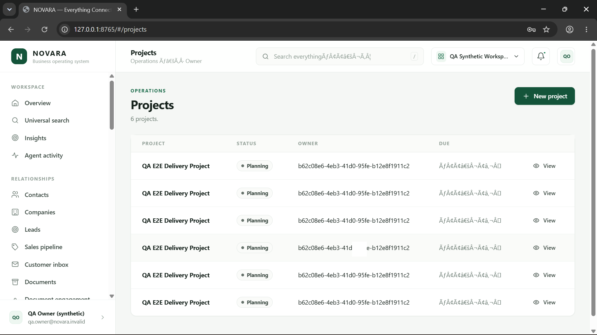
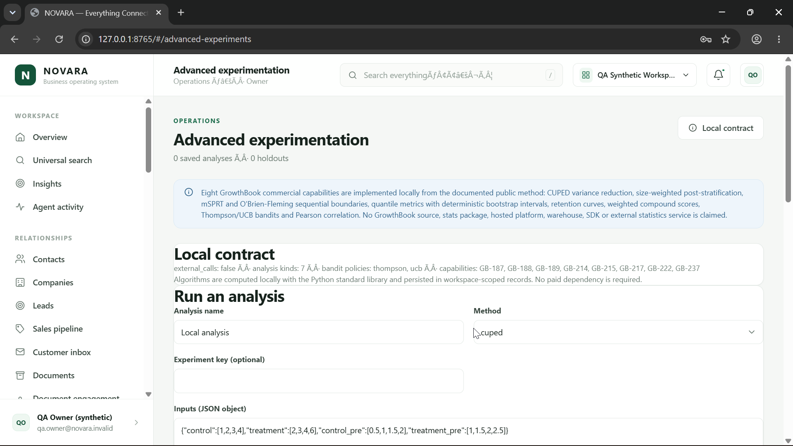

Unified business workspace
One installation instead of a stack of disconnected applications.
One connected workspace · Local-first by default
NOVARA brings customer management, sales, marketing, support, projects, analytics, documents and automation together in one extensible business operating system.
Everything Connected. Everything Under Control.
Active development. Not a release candidate. Local install only; nothing is published or sent externally.

Real application screen · local QA capture with synthetic data
Counts from the repository parity dashboard and local QA evidence, 24 November 2026. They describe local implementation and tests, not a hosted service, production deployment or release.
01 · The problem
A growing business tends to accumulate separate systems for every job. Each one holds a piece of the customer, and none of them sees the whole.
Repeated customer records and conflicting contact details.
Conversations scattered across inboxes, threads and tabs.
Separate permission systems and no single audit trail.
Fragmented analytics that cannot follow one customer journey.
Manual copy-paste work where a connected event should do it.
Rising software costs and dependence on external vendors.
NOVARA's answer is one application with one customer identity, one workspace, one permission model and one event spine. See the approach
02 · Why NOVARA
The difference is structural: modules share the same data model and the same audit event stream, so an action in one place can be visible everywhere.
One installation instead of a stack of disconnected applications.
Capability modules are built against a documented internal contract.
Local-first by default; your database stays in your project folder.
Source is available for local use, subject to final repository licensing review.
A contact created by a form, visit or inbox conversation is one record.
Local events link lead, task, notification, draft and audit history.
Workflows run through NOVARA's own durable local job queue.
A universal search surface backed by a local search implementation.
In-app notifications and notification workflows in one place.
Flags, experiments, exposure and statistics evaluated locally.
Configuration-only adapters with explicit, honest capability states.
No telemetry, activation check, hosted account or mandatory subscription.
FastAPI, SQLAlchemy and Alembic with a documented REST surface.
Provider-backed features stay blocked until a real provider is configured and verified.
03 · Context
NOVARA studies ten capability areas from established open projects. These are functional alternatives and inspiration sources, not partners and not copied codebases.
| Project | Capability area it inspired | NOVARA's approach |
|---|---|---|
| Formbricks | Surveys and feedback | Feedback Studio survey lifecycle with local display and response records. |
| Meilisearch | Search | Local search engine and advanced search routes; no external search server. |
| GrowthBook | Feature flags and experimentation | Feature flags, experiment delivery, exposure and statistics evaluated locally. |
| Papermark | Documents and data rooms | Document metadata, share links and engagement events; NOVARA serves no file bytes. |
| Plane | Project management | Projects, work items, collaboration and governance on the shared event spine. |
| Mautic | Marketing automation | Campaign and marketing-content modules with local records and no outbound delivery. |
| Chatwoot | Customer support | Customer inbox, conversation operations and support reporting with shared identity. |
| Novu | Notifications | Notification center and workflows using in-app, polling-based delivery records. |
| Marketing Skills | Marketing workflows and skills | A pinned, locally vendored skills catalogue with no upstream script execution. |
| Sellbird | Sales and prospecting capabilities | Lead intelligence and sales engagement drafts with an explicit no-send safety gate. |
THIRD_PARTY_NOTICES.md and docs/research/LICENSE_COMPLIANCE.md.04 · Explore
Each card explains what the module does, the problem it removes, and the workflow it joins. Every description reflects locally implemented capability.
The daily view of work across the workspace.
Solves: not knowing what changed or what needs attention.
Capabilities: activity, counts and module navigation.
Workflow: start here, then follow a task or customer.
One authoritative customer record with a unified timeline.
Solves: duplicate contacts and scattered history.
Capabilities: contacts, companies, custom fields, lifecycle and timeline.
Workflow: lead acquisition and customer support.
Qualify, score and convert inbound interest.
Solves: lost context between form submission and follow-up.
Capabilities: lead scoring, qualification and assignment.
Workflow: website form to CRM to task.
Governed sales signals, offers and outreach drafts.
Solves: untracked prospecting and unchecked messaging.
Capabilities: cohorts, drafts, approval gate, opt-out and no-send boundary.
Workflow: signal to draft to authorised approval.
Audience, journey and engagement records for campaigns.
Solves: campaigns that live outside the customer record.
Capabilities: campaign lifecycle, journeys, enrollments and analytics.
Workflow: audience to campaign to analytics; delivery is not executed.
Content, consent and engagement measurement.
Solves: marketing data disconnected from CRM identity.
Capabilities: landing pages, forms, consent, suppression and email engagement records.
Workflow: form submission to contact to timeline.
Conversations and tickets tied to the customer record.
Solves: support threads that never reach the CRM timeline.
Capabilities: tickets, messages, internal notes, labels and reporting.
Workflow: conversation to identification to resolution.
Surveys, targeting, segments and feedback intelligence.
Solves: feedback that never reaches the customer or product record.
Capabilities: survey display, responses, segments and insights.
Workflow: survey to response to customer timeline.
Flags, experiments, exposure, statistics and reporting.
Solves: decisions made without a traceable local record.
Capabilities: feature flags, experiments, A/A tests, SRM and bandit recommendations.
Workflow: hypothesis to flag to measured outcome.
One search entry point across module records.
Solves: hunting through separate tools for one detail.
Capabilities: global search, indexes, vectors and advanced search evaluation.
Workflow: find a contact, document or work item in one place.
Projects, work items, wiki pages and collaboration.
Solves: plans that drift away from customer commitments.
Capabilities: planning, dependencies, estimates, recurring work and time logs.
Workflow: lead to task to project delivery.
Document metadata, rooms, links and engagement.
Solves: no visibility into who engaged with a shared document.
Capabilities: rooms, share policies, visit and page-view records, revocation.
Workflow: upload metadata to secure link to activity.
In-app notifications and notification workflows.
Solves: important events that nobody sees.
Capabilities: digests, preferences, routing and local workflow execution.
Workflow: event to notification to follow-up.
Triggers, conditions and actions on the event spine.
Solves: repetitive manual steps between modules.
Capabilities: workflows, approvals, scheduled materialisation and durable jobs.
Workflow: trigger to condition to action to approval.
Governed, local agent configuration and runs.
Solves: untraceable automated suggestions and actions.
Capabilities: local agents, step limits, human approval and audit events.
Workflow: request to governed run to reviewed output.
Workspaces, roles, permissions, API keys and adapter configuration.
Solves: unclear access boundaries and hidden dependencies.
Capabilities: seven roles, custom roles, access governance, integration records.
Workflow: configure, verify, then connect deliberately.
Capability descriptions reflect the repository's implementation and parity evidence. Modules that depend on an external provider remain explicitly blocked until that provider is configured and verified; no delivery is simulated as successful.
05 · Connected workflows
These are NOVARA-supported paths observed in local testing. Steps that depend on an external provider are labelled honestly rather than presented as delivered.
A single submission becomes one contact with a lead, a task, an in-app notification and an audit event.
Campaign, approval and analytics records are real. The delivery adapter is a local boundary: no email, SMS or WhatsApp message is sent.
Support activity writes back to the same contact record instead of living in a separate inbox.
NOVARA records engagement and policy decisions. It does not store or serve the underlying file bytes.
Workflows run through the local job queue. Outbound effects stay gated behind explicit approval and a configured adapter.
06 · Open source and self-hosting
NOVARA is local-first. Basic use needs no hosted account, licence key, PostgreSQL, Redis or Docker. All data stays in one SQLite file unless you deliberately configure something else.
Python 3.11 or newer and a modern browser are enough.
.\scripts\start-local.ps1sh scripts/start-local.shOpen http://localhost:8000 and complete first-run setup. API documentation is at /docs.
Python virtual environment, SQLite, light-theme browser app, REST API and Alembic migrations.
Docker definitions, PostgreSQL configuration and container-based deployment.
Native mobile installers, hosted SaaS, managed backups and outbound notification delivery.
Licensing is a gate, not a claim. Dependency and upstream licence review is complete, but the repository licence file is still an owner decision. Until it is added, treat NOVARA as an open-source foundation subject to final repository licensing review; licence file pending owner decision.
07 · Product demonstration
Recorded locally during isolated QA with synthetic data. No external message was sent and no hosted service was contacted to produce these videos. The embedded demo shows real clicks and forms, not a sequence of still pages.
The earlier Product Demo 1.0 module tour remains available for a broader route overview.



All screenshots are genuine local QA captures with synthetic data, not fabricated interface concepts.
08 · Community and GitHub
The official repository is github.com/ganeshkrishnareddy/novara. Every action below is a normal link you choose to open. Starring and following are voluntary GitHub actions performed by you.
Voluntary, on GitHub only.
Build on the source yourself.
Follow project updates.
Read the actual implementation.
Reproducible reports are valued.
Describe the real workflow.
Ask and share with others.
Install, configure and test.
GitHub engagement policy. NOVARA does not offer credits, tools, premium access or gifts in exchange for stars or follows. No feature is locked behind a star or fork. No automated starring, following or endorsement is performed. Community support is voluntary.
09 · Contribute
The contribution program is designed around useful participation, never GitHub engagement metrics. Eligibility and benefits are subject to published criteria, an approved budget and human review.
Submit a GitHub username, contribution URL, pull request, accepted issue, documentation change or QA evidence. A human reviewer moves each submission through these states:
A star is not a qualifying contribution and never unlocks a benefit.
Contributor recognition, early access to experimental features, a community toolkit, beta testing opportunities, a public contributor profile, technical discussion invitations, and limited credits for eligible NOVARA-hosted services if actually offered. No benefit is promised until funded and approved.
Optional GitHub OAuth may verify identity with explicit consent, minimum necessary permissions, a secure server-side session and no unnecessary token storage. No passwords are collected. Account deletion and privacy controls must be available. If OAuth is unavailable, a safe manual verification path is used. Nothing here automates a GitHub action.
Read the contribution program10 · FAQ
Every answer reflects repository evidence rather than an aspiration.
Ask a questionOne locally hosted business operating system with a shared customer identity, workspace, permission model and event spine. Its modules cover CRM, sales, marketing, support, feedback, projects, documents, analytics, search, automation and governed local agents.
The source and foundation are available locally, and upstream licence review is complete. There is no repository licence file yet: treat NOVARA as an open-source foundation subject to final repository licensing review; licence file pending owner decision.
Local use requires no hosted account, licence key, paid AI API or mandatory subscription. There is no hosted commercial service in this build.
Yes, locally on your own machine with Python 3.11+ and a browser. Self-hosted deployment beyond the local install is prepared but not yet verified; see the hosting section above.
Python 3.11 or newer (3.12 recommended) and a modern browser for the default SQLite setup. PostgreSQL and Docker paths exist but have not been verified in this environment.
No. Local agents and governance features do not require a paid AI API. No hosted model call is made by the core service.
Agent configuration and runs are local and governed with step limits and human approval. No external model provider is contacted by default.
It aims to cover the capability areas of several tools in one application. Some capabilities are compatible local replacements rather than integrations with the original products; those boundaries are documented.
Yes. The API is FastAPI with a published OpenAPI document, the data layer uses SQLAlchemy and Alembic, and modules follow a documented internal contract.
Use the GitHub issue and pull request flows, or the documented contribution queue. Review is human and based on substantive work, never stars or follows.
github.com/ganeshkrishnareddy/novara. This is the official NOVARA project site.
Through configuration-only adapter records and explicit capability states. Provider-backed features stay blocked until you configure and verify a real provider; no fake delivery is reported.
No. It is active development and not a release candidate. Local tests are extensive, but deployment, containers, live PostgreSQL, outbound delivery and non-Chromium browsers remain unverified.
A verified local install is supported today. Container and PostgreSQL definitions are prepared but unverified. There is no hosted SaaS or native mobile target in this build.